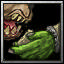
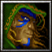
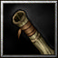
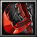
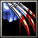
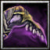
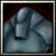
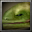

Increases the maximum hit points, mana and damage of all player units. Increases the armor and level by 1 every 10 levels of this research of all player units.
Is increased automatically for creeps and bosses to the lowest hero level of playing users.
Increases the armor and life regeneration rate provided by the Power Generator.
Improves the infernals or dragons which are summoned by the Hand of God. Also increases the AOE damage caused by the Hand of God.
Allows the upgrade of Level 3 Town Halls and Guardian Towers to a Temple of Light or Darkness.
Your units won't die in Maelstrom anymore.
Increases the cargo slots and armor by 2.
Allows unit abilities to target units with a level above their initial level: Polymorph (Human, Goblin), Transmute (Goblin), Possession (Undead), Charm Creeps) etc. This does not improve hero abilities!

Improved Mount
Increases the movement speed of your mount by 20, its sight by 30, its maximum hit points by 50 and sets the maximum of cargo slots available to 1.
Increases the movement speed of your mount by 20, its sight by 30, its maximum hit points by 50 and sets the maximum of cargo slots available to 1.
Increases armour, movement speed and attack and sight range of ships and submarines.
Increases the armor, hit points and damage of the Clan Hall.
Increases the armor, hit points and damage of all Clan Emissaries.
Increases the hit points and defense of Pack Horses.
Increases the armor and hit points of wall buildings.
Gives specific Troll ground units the ability to carry items.
Increases Ice Troll High Priest's mana capacity, mana regeneration rate, hit points, and gives them the ability to cast Abolish Magic.
Increases Witch Doctors' mana capacity, mana regeneration rate, hit points, and gives them the ability to cast Stasis Trap.
Gives Zalandari Throne of Wars the ability 'Barrage' which allows them to attack multiple air targets at the same time.
Gives Batriders the Liquid Fire attack, which deals damage over time to enemy buildings, reduces the repaired rate and the attack rate of enemy buildings.
Gives specific Ancient Greece ground units the ability to carry items.
Increases the attack damage of Militia, Footmen, Spellbreakers, Dragonhawk Riders, Gryphon Riders and Knights.
Increases the armor of Militia, Footmen, Spellbreakers, Knights, Flying Machines and Siege Engines.
Increases the ranged attack damage of Riflemen, Mortar Teams, Siege Engines and Flying Machines.
Allows training mythological units.
Increases Priests' mana capacity, mana regeneration rate, hit points, and gives them the ability to cast Dispel Magic.
Increases Priests' mana capacity, mana regeneration rate, hit points, and gives them the ability to cast Dispel Magic.
Houses summon Sheeps automatically.
Allows Footmen to use the Defend ability, which increases their defensive capabilities against Piercing attacks.
Upgrades Chariots to have the ability Ride Down.
Greek Houses provide more food.
Increases the amount of lumber that Slaves can carry by 4 and the amount of gold by 3-
Upgrades units with Large armor and increases the armor.
Increases the stats of male citizens and makes them magic immune.
Provides Spartans with the Reincarnation ability, which resurrects them after dying.
Gives specific Roman Empire ground units the ability to carry items.
Increases the attack damage of Militia, Footmen, Spellbreakers, Dragonhawk Riders, Gryphon Riders and Knights.
Allows Footmen to use the Defend ability, which increases their defensive capabilities against Piercing attacks.
Upgrades Chariots to have the ability Ride Down.
Provides units with increased life regeneration and allows building Aqueducts.
Provides Roman Infantry with the Pilum ability, which damages and stuns enemy troops.
Increases the armor and hit points of Human buildings.
Gives specific German WWII ground units the ability to carry items.
Upgrades Flamethrowers to attack causing burning oil, which causes the ground to burn.
Gives Snipers the ability Headshot which gives a chance to multiply their damage.
Allows ME 109s to attack land units.
Upgrades flying vehicles to drop their crew when being destroyed.
Provides SA Riflemen with the Ensnare ability. Ensnare can be used to capture enemy units.
Increases the movement speed of German ground vehicles.
Gives specific Modern Warfare ground units the ability to carry items.
Provides M-113b Medics the ability Repair Aura.
Increases the ranged attack damage of vehicles.
Provides Radio Towers with the ability to detect invisible units and Reveal.
Allows ground vehicles to load units.
Provides Apaches with the Cluster Rockets ability.
Gives air vehicles the ability Flares to evade attacks.
Increases the armor and hit points of buildings.
Increases the movement speed of vehicles.
Allows Snipers to cast ability Headshot.
Provides infantry with the Flashbang ability, which stops units from attacking.
Allows infantry to throw grenades.
Gives Snipers and Survival Tents the ability Camouflage which makes them permanently invisible until they attack.
Increases the damage of Archers, Huntresses, Glaive Throwers, and Hippogryph Riders.
Allows building male citizens an United Nations Building to use strategic commands.
Increases the armor of Militia, Footmen, Spellbreakers, Knights, Flying Machines and Siege Engines.
Increases the armor, hit points, attack speed and damage of your buildings.
Increases the maximum hit points, mana and damage of all player units. Increases the armor and level by 1 every 10 levels of this research of all player units.
Is increased automatically for creeps and bosses to the lowest hero level of playing users.
Gives specific Orc ground units the ability to carry items.
Increases the range of Troll Berserkers by 100.
Increases the melee attack damage of Grunts, Raiders and Tauren.
Increases the armor of Grunts, Raiders, Batriders, Tauren, Headhunters, Wind Riders and Demolishers.
Transforms Ogres into Ogre-Mages, giving them mana and the abilities Eye of Kilrogg, Bloodlust, and Runes.
Gives specific Alliance of Lordaeron ground units the ability to carry items.

Elven Ranger Training
Transforms Elven Archers into Elven Rangers, giving them increased hit points and sight radius.
Transforms Elven Archers into Elven Rangers, giving them increased hit points and sight radius.
Upgrades Knights to Paladins, giving them new abilities and increasing their stats.
Provides Paladins with the Healing ability. Can heal friendly units.
Increases the attack damage of Militia, Footmen, Spellbreakers, Dragonhawk Riders, Gryphon Riders and Knights.
Increases the armor of Militia, Footmen, Spellbreakers, Knights, Flying Machines and Siege Engines.
Gives Mages the ability Slow.
Gives Mages the ability Invisibility.
Gives Mages the ability Polymorph.
Gives Mages the ability Blizzard.
Increases the ranged attack damage of Ballistas.
Increases the attack damage of Militia, Footmen, Spellbreakers, Dragonhawk Riders, Gryphon Riders and Knights.
Increases the ranged attack damage of Riflemen, Mortar Teams, Siege Engines and Flying Machines.
Increases the armor of Militia, Footmen, Spellbreakers, Knights, Flying Machines and Siege Engines.
Increases the armor of Riflemen, Mortar Teams, Dragonhawk Riders and Gryphon Riders.
Causes a Gryphon Rider's attacks to damage multiple units.
Allows Flying Machines to attack land units.
Increases the armor and hit points of Human buildings.
Allows Footmen to use the Defend ability, which increases their defensive capabilities against Piercing attacks.
Increases the maximum hit points of Knights, Dragonhawk Riders, and Gryphon Riders by 100.
Increases Priests' mana capacity, mana regeneration rate, hit points, and gives them the ability to cast Dispel Magic.
Increases Sorceresses' mana capacity, mana regeneration rate, hit points, and gives them the ability to cast Invisibility.
Increases the range of Riflemen attacks.
Provides Mortar Teams with the Flare ability. Flares can be used to reveal any area of the map.
Can see invisible units.
Gives Spellbreakers the ability to take control of enemy summoned units.
Upgrades Siege Engines, giving them the Barrage ability, which allows them to damage nearby enemy air units.
Gives specific Human ground units the ability to carry items.
Upgrades the weapons on Flying Machines to give them an area effect damage attack against air units.
Provides Dragonhawk Riders with the Cloud ability, which stops ranged buildings from attacking.
Upgrades Knights to deal increased damage to targets with Medium armor.
Allows building male citizens an Arcane Observatory to reveal hostile units and resurrect dead player units.
Increases the melee attack damage of Grunts, Raiders and Tauren.
Increases the ranged attack damage of Headhunters, Wind Riders, Batriders and Demolishers.
Increases the armor of Grunts, Raiders, Batriders, Tauren, Headhunters, Wind Riders and Demolishers.
Increases the damage bonus that the War Drums aura on the Kodo Beast gives. War Drums increases the damage of friendly units around Kodo Beasts.
Causes Peons', Grunts', and Raiders' attacks to gain resources when hitting enemy buildings.
Upgrades the totem carried by Tauren, increasing the damage of their Pulverize ability.
Enables Raiders to use the Ensnare ability. Ensnare causes a target enemy unit to be bound to the ground so that it cannot move. Air units that are ensnared can be attacked as though they were land units.
Adds an additional poison effect to Wind Riders' attacks. A unit poisoned by Envenomed Spears takes damage over time.
Increases Witch Doctors' mana capacity, mana regeneration rate, hit points, and gives them the ability to cast Stasis Trap.
Increases Shaman mana capacity, mana regeneration rate, hit points, and gives them the ability to cast Lightning Shield.
Surrounds Orc buildings with spikes that damage enemy melee attackers. Deals 5 damage per attack plus an additional 20% of the attacker's damage.
Gives Batriders the Liquid Fire attack, which deals damage over time to enemy buildings, reduces the repaired rate and the attack rate of enemy buildings.
Increases Spirit Walkers' mana capacity, mana regeneration rate, hit points, and gives them the ability to cast Disenchant.
Upgrades Burrows and Watch Towers so that they have Fortified armor.
Transforms Headhunters into Berserkers, giving them increased hit points and the Berserk ability.
Gives specific Orc ground units the ability to carry items.
Upgrades Demolishers to fire rocks smothered in burning oil, which causes the ground to burn.
Allows building male citizens a Fountain of Blood to train and convert Fel Orcs.
Increases the attack damage of Crypt Fiends, Gargoyles, Destroyers, and Frost Wyrms.
Enables Ghouls and Abominations to use the Cannibalize ability. Cannibalize consumes a nearby corpse to restore health.
Increases the attack rate of Ghouls by 35%, and increases their movement speed.
Enables Crypt Fiends to use the Web ability. Web binds a target enemy air unit in webbing, forcing it to the ground. Webbed units can be hit as though they were land units.
Enables the ability for Gargoyles to assume Stone Form. Stone Form transforms the Gargoyle into a statue with high armor, spell immunity, and regeneration. The Gargoyle cannot attack in this form.
Increases Banshees' mana capacity, mana regeneration rate, hit points, and gives them the ability to cast Anti-magic Shell.
Enables Frost Wyrms to use the Freezing Breath ability. When cast on a building, temporarily stops production.
Increases the duration of raised Skeleton Warriors and Skeletal Mages by 20 seconds.
Increases the armor of Crypt Fiends, Gargoyles, Destroyers, and Frost Wyrms.
Causes one of the two skeletons created by Raise Dead to be a Skeletal Mage and increases the duration of raised Skeleton Warriors and Skeletal Mages by 20 seconds.
Crypt Fiends gain the ability to burrow. Burrowed Crypt Fiends are invisible and gain increased hit point regeneration, but cannot attack.
Allows the Obsidian Statue to transform into a Destroyer, a large flying unit that must devour magic to sustain its mana. The Destroyer has Spell Immunity, Devour Magic, Absorb Mana, and Orb of Annihilation.
Attacks land and air units.
Gives Meat Wagons the ability to generate corpses.
Gives specific Undead ground units the ability to carry items.
Allows building male citizens the Lich King to convert hostile units into Undead and summoning Shades somewhere on the map.
Increases the damage of Archers, Huntresses, Glaive Throwers, and Hippogryph Riders.
Increases the damage of Druids of the Claw in Bear Form, Druids of the Talon in Storm Crow Form, Dryads, Mountain Giants, Faerie Dragons, Hippogryphs, and Chimaeras.
Increases the armor of Archers, Huntresses, and Hippogryph Riders.
Increases the armor of Druids of the Claw in Bear Form, Druids of the Talon in Storm Crow Form, Dryads, Mountain Giants, Faerie Dragons, Hippogryphs, and Chimaeras.
Gives Night Elves the ability to see as far at night as they do during the day.
Upgrades all Ancients' and Treants' movement speed and armor.
Gives the Huntress the ability to send her owl companion to a nearby tree and provide vision.
Can see invisible units.
Gives the Huntress the ability to strike additional units with her bouncing glaive attacks.
Increases the Archer's and Hippogryph Rider's attack range.
Increases damage of Archers and Hippogryph Riders by 4.
Increases their Night Elf Form's mana capacity, mana regeneration rate, hit points, and gives them the ability Storm Crow Form.
Increases their Night Elf Form's mana capacity, mana regeneration rate, hit points, attack damage and gives them the ability Rejuvenation.
Gives the Dryad the ability to dispel positive buffs from enemy units, and negative buffs from friendly units.
Damages summoned units.
Gives Chimaeras the ability to hurl corrosive bile onto enemy buildings.
Gives Mountain Giants increased resistance to spell damage.
Gives Mountain Giants increased resistance to attack damage.
Allows Druids of the Claw to cast Roar while in Bear Form.
Allows Druids of the Talon to cast Faerie Fire while in Storm Crow Form.
Increases the amount of mana that can be stored in Moon Wells by 100, and their rate of mana regeneration by 52%.
Gives specific Night Elf ground units the ability to carry items.
Allows building male citizens a giant World Tree to heal and resurrect Night Elf units anywhere on the map!
Gives specific Blood Elf ground units the ability to carry items.
Increases the maximum hit points of Dragonhawk Ridersby 100.
Increases the attack damage of Swordsmen, Spellbreakers, Dragonhawk Riders, Blood Elf Lieutenants and Wagons.
Increases the armor of Swordsmen, Spellbreakers, Blood Elf Lieutenants, Ballistas, Cages, Wagons, and Blood Elf Decimators.
Increases the armor and hit points of Blood Elf buildings.
Increases the armor of Blood Elf Archers,Dragonhawk Riders and Phoenixes.
Increases Priests' mana capacity, mana regeneration rate, hit points, and gives them the ability to cast Dispel Magic.
Increases the armor of Archers.
Increases the damage of Blood Elf Archers, Ballistas, Phoenixes, and Blood Elf Decimators.
Increases damage of Blood Elf Archers by 4.
Upgrades Ballistas to fire missiles smothered in burning oil, which causes the ground to burn.
Increases the armor and hit points of Blood Elf siege weapons.
Provides Blood Elf units and buildings with the Siphon Mana ability, which transfers mana from enemy units to the caster or from the caster to allied units.
Allows building male citizens a Magic Vault with abilities Burn Mana and Siphon Mana.
Enables Naga Myrmidons to use the Ensnare ability. Ensnare causes a target enemy unit to be bound to the ground so that it cannot move. Air units that are ensnared can be attacked as though they were land units.
Gives the Couatl the ability to dispel positive buffs from enemy units, and negative buffs from friendly units.
Damages summoned units.
Increases the attack damage of Naga attack units.
Increases the armor of Naga attack units.
Gives Naga Myrmidons and Snap Dragons the ability to submerge under water, hiding them from view.
Gives specific Naga ground units the ability to carry items.
Allows Infernals and Reavers to use the ability Permanent Immolation.
Gives Infernals the ability Resistant Skin.
Increases Succubus' mana capacity, mana regeneration rate, hit points, and gives them the ability to cast Dispel Magic.
Gives Fel Stalkers the ability Web.
Gives Fel Stalkers the ability Devour Magic.
Gives Overlords the ability Cleaving Attack.
Improves the Demon Fire ability of Nether Drakes.
Gives Infernal Machines the ability Defend.
Gives Doom Guards the ability Cripple.
Gives Doom Guards the ability Rain of Fire.
Gives the Greater Voidwalkers the ability Slow.
Increases the armor of Overlords, Infernal Machines, Inquisitors and Doom Guards.
Increases the armor of Fel Stalkers, Nether Drakes, Greate Voidwalkers, Jailers, Infernals and Reavers.
Allows Infernals and Reavers to use the ability Hardened Skin.
Increases the number of summoned units and reduces the cooldown of Dark Summon.
Increases the damage per second, maximum target creep level and capacity for Devour of Jailers.
Gives Inquisitors the ability Soul Theft.
Gives all ships the ability Hyperspace which allows them to travel at any visible point on the map.
Gives all ships the ability Inferno which allows them to summon Infernals.
Gives specific Demon ground units the ability to carry items.
Increases the ranged attack damage of Draenei Harbringers, Draenei Seers, Salamanders, Tamed Nether Drakes and Draenei Demolishers.
Increases the armor of Draenei Vindicators, Draenei Stalkers, Draenei Harbringers, Draenei Seers, Salamanders, Tamed Nether Drakes and Draenei Demolishers.
Increases Draenei Seer mana capacity, mana regeneration rate, hit points, and gives them the ability to cast Healing Wave.
Increases Draenei Harbringer's mana capacity, mana regeneration rate, hit points, and gives them the ability to cast Bloodlust.
Increases the armor and hit points of Draenei buildings.
Improves the Demon Fire ability of Tamed Nether Drakes.
Gives Salamanders the ability Devour.
Allows building male citizens a Draenei Prison to capture enemy units anywhere on the map!
Gives specific Furbolg ground units the ability to carry items.
Increases the melee attack damage of Furbolgs, Furbolg Trackers, Furbolg Champions, Furbolg Ursa Warriors, Polar Furbolgs, Polar Furbolg Champions, Furbolg Shamans and Furbolg Elder Shamans.
Increases the ranged attack damage of Furbolgs, Furbolg Trackers, Furbolg Champions, Furbolg Ursa Warriors, Polar Furbolgs, Polar Furbolg Champions, Furbolg Shamans and Furbolg Elder Shamans.
Increases the armor of Furbolgs, Furbolg Trackers, Furbolg Champions, Furbolg Ursa Warriors, Polar Furbolgs, Polar Furbolg Champions, Furbolg Shamans and Furbolg Elder Shamans.
Increases attack damage of Timber Wolves, Giant Wolves, Dire Wolves and Green Drakes.
Increases the armor of Timber Wolves, Giant Wolves, Dire Wolves and Green Drakes.
Increases Furbolg Shaman's mana capacity, mana regeneration rate, hit points, and gives them the ability to cast Abolish Magic.
Enables Furbolg Trackers to use the Ensnare ability. Ensnare causes a target enemy unit to be bound to the ground so that it cannot move. Air units that are ensnared can be attacked as though they were land units.
Enables Furbolg Trackers to use the Ensnare ability. Ensnare causes a target enemy unit to be bound to the ground so that it cannot move. Air units that are ensnared can be attacked as though they were land units.
Enables Furbolg Ursa Warriors to use the Blood Lust ability.
Enables Furbolg Ursa Warriors to use the Bash ability.
Gives Polar Furbolgs the ability Web.
Gives Furbolg Shamans and Furbolg Elder Shamans the ability Corruption.
Allows to drop air supplies from flying units.
Gives specific Goblin ground units the ability to carry items.
Allows towers to use the Reveal ability.
Allows using explosives to blow up the whole tunnel system.
Gives units with flame attacks extra and AOE damage.
Increases the melee attack damage of Goblin units.
Upgrades Goblin Air Drones, giving them the Barrage ability, which allows them to damage nearby enemy units.
Increases the amount of gold that Goblin Laborers can carry by 1.
Gives Fuel Pumps the ability Fuel.
Gives Goblin Emperors the ability Demolish.
Makes Goblin tank units faster.
Allows Goblin Flamethrowers to use the ability Flame Grenade.
Allows Goblin ground units to take turrets and carry them around.
Allows constructing Oil Derricks.
Allows Assault Tanks to cast Cluster Rockets.
Increases the armor and hit points of Goblin buildings. Increases the speed of repairing buildings and mechanical units for Goblin Laborers and warriors.
Increases the armor of Goblin units.
Increases the ranged attack damage of Goblin units.
Allows Goblin War Zeppelins to drop bombs on ground units.
Allows Goblin Steam Rollers to cut down trees.
Gives specific Dwarf ground units the ability to carry items.
Allows Gryphons to cast Breed.
Allows building male citizens a Dwarf Lumber Mill to collect lumber from nearby trees.
Gives Gryphons and Giant Polar Bears the ability Devour.
Increases the range of Riflemen and Gun Tower attacks.
Gives Troll Slayers the Berserk ability.
Reduces the received damage to 80 % and returns 30% of an enemy unit's melee attack damage back to it.
Upgrades Siege Engines, giving them the Barrage ability, which allows them to damage nearby enemy air units.
Upgrades Siege Engines to Elite Siege Tanks.
Increases the armor and hit points of Dwarf buildings.
Increases Runecaster's mana capacity, mana regeneration rate, hit points, and gives them the ability to cast Summon Rock Golem.
Increases Battle Priests' mana capacity, mana regeneration rate, hit points, and gives them the ability to cast Dispel Magic.
Allows War Golems to cast Sleep Form.
Upgrades the weapons on Flying Machines to give them an area effect damage attack against air units.
Allows Flying Machines to attack land units.
Provides Mortar Teams with the Flare ability. Flares can be used to reveal any area of the map.
Can see invisible units.
Increases the attack damage of Militia, Footmen, Spellbreakers, Dragonhawk Riders, Gryphon Riders and Knights.
Increases the armor of Militia, Footmen, Spellbreakers, Knights, Flying Machines and Siege Engines.
Increases the armor of Riflemen, Mortar Teams, Dragonhawk Riders and Gryphon Riders.
Increases the ranged attack damage of Riflemen, Mortar Teams, Siege Engines and Flying Machines.
Increases the maximum hit points of Knights, Dragonhawk Riders, and Gryphon Riders by 100.
Causes a Gryphon Rider's attacks to damage multiple units.
Gives specific High Elf ground units the ability to carry items.
Allows building male citizens a Sun Well with abilities Sun Key and Life and Mana Regeneration for player units.
Provides High Elf towers with the ability Antimagic Shield.
Increases damage of Archers by 4.
Provides Dragonhawk Riders with the Cloud ability, which stops ranged buildings from attacking.
Increases the maximum hit points of Knights, Dragonhawk Riders, and Gryphon Riders by 100.
Increases the Archer's attack range.
Trains War Eagles to allow Archers to mount them. This allows them to attack both air and ground units.
Increases Priests' mana capacity, mana regeneration rate, hit points, and gives them the ability to cast Dispel Magic.
Increases the armor and hit points of High Elf buildings.
Increases Priests' mana capacity, mana regeneration rate, hit points, and gives them the ability to cast Dispel Magic.
Increases the attack damage of Militia, Footmen, Spellbreakers, Dragonhawk Riders, Gryphon Riders and Knights.
Increases the armor of Riflemen, Mortar Teams, Dragonhawk Riders and Gryphon Riders.
The High Elves revere the sun. Increases the sight and other stats of High Elf units at day time. Workers harvest plus 10 lumber and plus 5 gold during the day.
Gives specific Gnome ground units the ability to carry items.
Gives you 100 bonus gold and 100 bonus lumber whenever any player researches anything.
Increases the attack damage of Militia, Footmen, Spellbreakers, Dragonhawk Riders, Gryphon Riders and Knights.
Increases the armor of Militia, Footmen, Spellbreakers, Knights, Flying Machines and Siege Engines.
Increases the attack speed, armor, hit points, and hit points regeneration of Gnome mechanical units.
Gives Gnome units increased resistance to spell damage.
Increases Priests' mana capacity, mana regeneration rate, hit points, and gives them the ability to cast Dispel Magic.
Gives specific Murloc ground units the ability to carry items.
Turtles will spawn Eggs after dying which will summon Hatchlings.
Gives Murloc units the ability River Bank which increases stats as long as this unit is in deep or shallow water.
Gives Murloc units the ability Swarming which increases stats for all nearby allied Murloc units.
Increases the attack damage of Murloc attack units.
Increases the armor of Naga attack units.
Allows building male citizens a Murloc Fisher to protect your base.
Gives specific Eredar ground units the ability to carry items.
Allows Footmen to use the Defend ability, which increases their defensive capabilities against Piercing attacks.
Increases the armor, hit points and hit points regeneration of Eredar buildings.
Allows building male citizens Exodar a powerful dimensional ship and the capital of the Draenei.
Gives specific Ogre ground units the ability to carry items. Ogre ground units can carry up to 4 items.
Increases the melee attack damage of Ogre units.
Increases the armor of Ogre units.
Increases the ranged attack damage for Ogre units.
Increases Ogre Magi mana capacity, mana regeneration rate, hit points, and gives them the ability to cast Slow.
Enables Ogre Warriors to use the Pulverize ability.
Gives Ogre units increased resistance to spell damage.
Improves the fighting capabilities of Ogres with a 250 hit point increase, 3 bonus attack damage, and 1 bonus hit points regeneration.
Enables Ogre Hunters to use the Ambush ability. Ambush makes the Ogre Hunter invisible for some time.
Enables Ogre Hunters to use the Ensnare ability. Ensnare causes a target enemy unit to be bound to the ground so that it cannot move. Air units that are ensnared can be attacked as though they were land units.
Increases Ogre Warlocks' mana capacity, mana regeneration rate, hit points, and gives them the ability to cast Cripple.
Enables Ogre Fire Breathers to use the Firebolt ability
Enables Ogre ground units to use the Taunt ability.
Enables Ogre Lords to use the Reincarnation ability.
Enables Ogre Stone Throwers to use the Demolish ability.
Enables Captured Black Drakes to use the Fire Attack ability.
Enables Mok'Nathal to use the Summon Bear ability.
Enables Ogre Drummers to use the Roar ability.
Allows building male citizens a Stonemaul Camp to train Stonemaul clan Ogres.
Enables Clefthoof to use the War Stomp ability.
Transforms Gronn into Gronn with War Clubs, giving them increased damage.
Gives specific Pandaren ground units the ability to carry items.
Increases the Archer's attack range.
Upgrades all Pandaren units and gives them the ability Drunk Panda which can be used only once to increase the maximum hit points of the caster and fully heal the caster.
Increases their Pandaren Form's mana capacity, mana regeneration rate, hit points, attack damage and gives them the ability Rejuvenation.
Allows Footmen to use the Defend ability, which increases their defensive capabilities against Piercing attacks.
Increases their Pandaren Form's mana capacity, mana regeneration rate, hit points, attack damage and gives them the ability Rejuvenation.

Bamboo Weapons
Increases the attack damage of Militia, Footmen, Spellbreakers, Dragonhawk Riders, Gryphon Riders and Knights.
Increases the attack damage of Militia, Footmen, Spellbreakers, Dragonhawk Riders, Gryphon Riders and Knights.
Increases their Monk's mana capacity, mana regeneration rate, hit points, attack damage and gives them the ability Wind Walk.
Increases the hit points regeneration of Pandaren units.
Provides Firework Teams with the Firework ability. Fireworks can be used to reveal any area of the map.
Can see invisible units.
Gives Cloud Serpents the ability Chain Lightning.
Provides Cloud Serpents with the Cloud ability, which stops ranged buildings from attacking.
Allows building male citizens the Jade Forest which prevents enemies from fighting.
Provides Warlords with the Command Aura ability, which increases the damage of allied units.
Increases Priests' mana capacity, mana regeneration rate, hit points, and gives them the ability to cast Dispel Magic.
Gives Primal Pandaren the Berserk ability.
Gives Dragon Turtles increased resistance to attack damage.
Gives Dragon Turtles and Giant Sea Turtles the ability Spiked Shell which returns enemy melee damage.
Increases the attack damage of Pandaren Woodcutters and increases the gathered lumber.
Gives specific Lordaeron ground units the ability to carry items.
Increases the attack damage of Militia, Footmen, Spellbreakers, Dragonhawk Riders, Gryphon Riders and Knights.
Increases the armor of Militia, Footmen, Spellbreakers, Knights, Flying Machines and Siege Engines.
Increases the ranged attack damage of Headhunters, Wind Riders, Batriders and Demolishers.
Increases the armor of Riflemen, Mortar Teams, Dragonhawk Riders and Gryphon Riders.
Increases the armor and hit points of mechanical units.
Increases the range of Riflemen attacks.
Increases the maximum hit points of Knights, Pegasus Knights, and Gryphon Riders by 100.
Increases Mage's mana capacity, mana regeneration rate, hit points, and gives them the ability to cast Dispel Magic.
Increases Sorceresses' mana capacity, mana regeneration rate, hit points, and gives them the ability to cast Invisibility.
Gives Battle Mages the ability to cast Rain of Fire.
Increases the damage bonus of the ability Command Aura for Banner Carriers.
Increases the armor and hit points of Human buildings.
Upgrades Footmen to Spearmen, giving them a higher attack range and more damage.
Upgrades Archers to Crossbowmen, giving them more damage but slower cooldown.
Gives units the passive ability Scarlet Crusade which allows them causing extra damage to Undead enemies.
Allows building male citizens the Scarlet Monastery.
Upgrades Houses, Scout Towers, Guard Towers, Arcane Twoers, and Cannon Towers so that they have Fortified armor.
Allows building male citizens the Cathedral of Light.
Gives specific Stormwind ground units the ability to carry items.
Increases the armor and hit points of Human buildings.
Increases the attack damage of Militia, Footmen, Spellbreakers, Dragonhawk Riders, Gryphon Riders and Knights.
Allows Footmen to use the Defend ability, which increases their defensive capabilities against Piercing attacks.
Increases the Ranger's attack range.
Increases damage of Stormwind Rangers by 4.
Increases the maximum hit points of Knights, Dragonhawk Riders, and Gryphon Riders by 100.
Increases the maximum hit points of Knights, Dragonhawk Riders, and Gryphon Riders by 100.
Upgrades Knights to deal increased damage to targets with Medium armor.
Increases the armor of Militia, Footmen, Spellbreakers, Knights, Flying Machines and Siege Engines.
Increases the ranged attack damage of Riflemen, Mortar Teams, Siege Engines and Flying Machines.
Increases Mage's mana capacity, mana regeneration rate, hit points, and gives them the ability to cast Teleport.
Increases Sorceresses' mana capacity, mana regeneration rate, hit points, and gives them the ability to cast Invisibility.
Increases Priests' mana capacity, mana regeneration rate, hit points, and gives them the ability to cast Dispel Magic.
Increases the armor of Riflemen, Mortar Teams, Dragonhawk Riders and Gryphon Riders.
Gives specific Dalaran ground units the ability to carry items.
Allows Power Generators to enable or disable shields which cause damage to enemy units.
Gives Pikemen the ability Pike Formation.
Gives Apprentice Wizards the ability Feedback.
Increases Wizards mana capacity, mana regeneration rate, hit points, and gives them the ability to cast Summon Sea Elemental.
Allows Dalaran buildings to use the ability Blink.
Allows Dalaran buildings to spawn 2 Fire Elementals whenever it gets destroyed.
Increases the armor, maximum hit points and damage of all elemental units.
Allows Dalaran buildings to use the ability Mana Shield.
Upgrades all buildings' movement speed and armor.
Adds one additional slot to Enchanted Gold Mines.
Increases Fire Mages mana capacity, mana regeneration rate, hit points, and gives them the ability to cast Rain of Fire.
Increases the maximum hit points of Dragonhawk Riders and Supply Carts by 100.
Provides Dragonhawk Riders with the Cloud ability, which stops ranged buildings from attacking.
Increases the armor of Supply Carts, Dalaran Rejects, Dalaran Mutants, Guardian Golems, Flesh Golems and Elementals.
Increases the attack damage of Pikeman, Apprentice Wizards and Dragonhawk Riders.
Increases the attack damage of Supply Carts, Dalaran Rejects, Dalaran Mutants, Guardian Golems, Flesh Golems and Elementals.
Increases Guardian Golems and Flesh Golems mana capacity, mana regeneration rate, hit points, and gives them the ability to cast Hurl Boulder and Shockwave.
Increases the range and damage of ship attacks.
Increases the damage from land cannons against enemy ships.
Allows all battleships to transport units.
Increases the range of Riflemen attacks.
Increases the amount of mana that can be stored in Moon Wells by 100, and their rate of mana regeneration by 52%.
Allows building male citizens the Proudmoore Keep to defend their base.
Increases Storm Sorcerers' mana capacity, mana regeneration rate, hit points, and gives them the ability to cast Invisibility.
Increases Ship Doctors' mana capacity, mana regeneration rate, hit points, and gives them the ability to cast Dispel Magic.
Increases Hydromancers' mana capacity, mana regeneration rate, hit points, and gives them the ability to cast Dispel Magic.
Increases the armor and hit points of Human buildings.
Increases the maximum hit points of Knights, Dragonhawk Riders, and Gryphon Riders by 100.
Gives Captains the ability Defend.
Enables Guardsmen to use the Ensnare ability. Ensnare causes a target enemy unit to be bound to the ground so that it cannot move. Air units that are ensnared can be attacked as though they were land units.
Enables Guardsmen to use the Ensnare ability. Ensnare causes a target enemy unit to be bound to the ground so that it cannot move. Air units that are ensnared can be attacked as though they were land units.
Increases the attack damage of Militia, Footmen, Spellbreakers, Dragonhawk Riders, Gryphon Riders and Knights.
Increases the armor of Militia, Footmen, Spellbreakers, Knights, Flying Machines and Siege Engines.
Increases the armor of Riflemen, Mortar Teams, Dragonhawk Riders and Gryphon Riders.
Increases the ranged attack damage of Riflemen, Mortar Teams, Siege Engines and Flying Machines.
Gives Water Dragons the ability Devour.
Provides Peregrin Falcons with the ability to detect invisible units.
Gives specific Kul Tiras ground units the ability to carry items.
Upgrades Knights to deal increased damage to targets with Medium armor.
Provides Mortar Teams with the Flare ability. Flares can be used to reveal any area of the map.
Can see invisible units.
Provides Worgen units with the Worgen Curse ability, which transforms organic enemy units into Worgen.
Gives specific Worgen ground units the ability to carry items.
Increases Druids' mana capacity, mana regeneration rate, hit points, and gives them the ability to cast Dispel Magic.
Allows building male citizens a Cathedral which can force the moon to appear.
Increases the sight of Worgen units at night and increases other stats of Worgen units during night. Workers harvest plus 10 lumber and plus 5 gold during night.

Improved Critical Strike
Upgrades the fighting style of Mindless Worgen, improving their Critical Strike ability, giving it a higher chance to multiply their damage on hits with a higher factor.
Upgrades the fighting style of Mindless Worgen, improving their Critical Strike ability, giving it a higher chance to multiply their damage on hits with a higher factor.
Provides Stormcrow Knights and Manticores with the Slow Poison ability, which damages hit enemy targets over time.
Increases the range of Riflemen and Gun Tower attacks.
Increases the maximum hit points of Knights, Dragonhawk Riders, and Gryphon Riders by 100.
Allows Gilneas Gunships to attack air units.
Increases the armor and hit points of Worgen buildings.
Increases the damage bonus of the ability Command Aura for Banner Carriers.
Allows Footmen to use the Defend ability, which increases their defensive capabilities against Piercing attacks.
Increases Nightstalkers' mana capacity, mana regeneration rate, hit points, and gives them the ability to cast Invisibility.

Worgen Claws
Increases the attack damage of Militia, Footmen, Spellbreakers, Dragonhawk Riders, Gryphon Riders and Knights.
Increases the attack damage of Militia, Footmen, Spellbreakers, Dragonhawk Riders, Gryphon Riders and Knights.
Increases the armor of Militia, Footmen, Spellbreakers, Knights, Flying Machines and Siege Engines.
Increases the ranged attack damage of Riflemen, Mortar Teams, Siege Engines and Flying Machines.
Upgrades Manticores, giving them the Barrage ability, which allows them to damage nearby enemy air units.
Gives Battle Mages the ability to cast Rain of Fire.
Provides Gilneas Gunships with the Cargo ability, which allows transporting units.
Gives specific Vrykul ground units the ability to carry items.
Allows Warriors to use the Defend ability, which increases their defensive capabilities against Piercing attacks.
Allows Spear Carriers to use the Spiked Shell ability, which increases damages attacking melee units.
Allows building male citizens the Halls of Valor to bring back dead warriors as champions.
Allows Spear Carriers to use the Spiked Shell ability, which increases damages attacking melee units.
Increases Priests' mana capacity, mana regeneration rate, hit points, and gives them the ability to cast Dispel Magic.
Increases Priests' mana capacity, mana regeneration rate, hit points, and gives them the ability to cast Dispel Magic.
Provides Vrykul units with the Resistant Skin ability, which reduces the duration of negative spells and renders the units immune to certain spells.
Increases the attack damage of Militia, Footmen, Spellbreakers, Dragonhawk Riders, Gryphon Riders and Knights.
Increases the armor of Militia, Footmen, Spellbreakers, Knights, Flying Machines and Siege Engines.
Increases the ranged attack damage of Riflemen, Mortar Teams, Siege Engines and Flying Machines.
Increases the armor of Riflemen, Mortar Teams, Dragonhawk Riders and Gryphon Riders.
Gives Lamps the ability to see as far at night as they do during the day and increases their sight range.
Gives specific Nerubian ground units the ability to carry items.
Enables the ability Spider Poison for Nerubian units. Attacked units will get more damage over time.
Enables Crypt Fiends to use the Web ability. Web binds a target enemy air unit in webbing, forcing it to the ground. Webbed units can be hit as though they were land units.
Enables the ability for Crypt Drones to assume Cocoon. Cocoon transforms the Crypt Drones into a cocoon with high armor, spell immunity, and regeneration. The Crypt Drone cannot attack in this form.
Enables the ability for Nerubian Warriors to assume Spawn Spiderlings. Spawn Spiderlings summons Spiderlings when a Nerubian Warrior dies.

Nerubian Weapons
Increases the attack damage of Crypt Fiends, Gargoyles, Destroyers, and Frost Wyrms.
Increases the attack damage of Crypt Fiends, Gargoyles, Destroyers, and Frost Wyrms.
Increases the armor of Crypt Fiends, Gargoyles, Destroyers, and Frost Wyrms.
Increases the armor of Crypt Fiends, Gargoyles, Destroyers, and Frost Wyrms.
Allows building male citizens the Azjol-Nerub.
Gives specific Fel Orc ground units the ability to carry items.
Increases Spirit Walkers' mana capacity, mana regeneration rate, hit points, and gives them the ability to cast Disenchant.
Gives Fel Orc units the Fel ability.
Increases Elder mana capacity, mana regeneration rate, hit points, and gives them the ability to cast Bloodlust.
Increases Warlocks'' mana capacity, mana regeneration rate, hit points, and gives them the ability to cast Unholy Frenzy.
Increases the armor of Grunts, Raiders, Batriders, Tauren, Headhunters, Wind Riders and Demolishers.
Increases the melee attack damage of Grunts, Raiders and Tauren.
Increases the ranged attack damage of Headhunters, Wind Riders, Batriders and Demolishers.
Enables Raiders to use the Ensnare ability. Ensnare causes a target enemy unit to be bound to the ground so that it cannot move. Air units that are ensnared can be attacked as though they were land units.
Increases the damage bonus that the War Drums aura on the Kodo Beast gives. War Drums increases the damage of friendly units around Kodo Beasts.
Upgrades Demolishers to fire rocks smothered in burning oil, which causes the ground to burn.
Increases damage of Crossbowmen and Lancers by 4.
Increases the Crossbowmen's and Lancersr' attack range.
Increases the number of available Demon units for kills.
Gives specific Faceless One ground units the ability to carry items.
Allows town halls to summon Tentacles.
Allows building male citizens a Forgotten One, a powerful creature from ancient times.
Increases the melee attack damage of Grunts, Raiders and Tauren.
Increases the armor of Grunts, Raiders, Batriders, Tauren, Headhunters, Wind Riders and Demolishers.
Increases Witch Doctors' mana capacity, mana regeneration rate, hit points, and gives them the ability to cast Stasis Trap.
Gives specific Satyr ground units the ability to carry items.
Increases the armor of Archers, Huntresses, and Hippogryph Riders.
Increases the damage of Archers, Huntresses, Glaive Throwers, and Hippogryph Riders.
Increases Sludge Flinger's mana capacity, mana regeneration rate, hit points, and gives them the ability Parasite.
Increases the damage of Druids of the Claw in Bear Form, Druids of the Talon in Storm Crow Form, Dryads, Mountain Giants, Faerie Dragons, Hippogryphs, and Chimaeras.
Increases the armor of Druids of the Claw in Bear Form, Druids of the Talon in Storm Crow Form, Dryads, Mountain Giants, Faerie Dragons, Hippogryphs, and Chimaeras.
Gives Satyr buildings the ability Mana Burn and improves Mana Burn for all buildings.
Upgrades all Ancients' and Treants' movement speed and armor.
Allows building male citizens the Skull of Gul'dan to cast Rain of Chaos anywhere on the map.
Gives specific Orc ground units the ability to carry items.
Increases the armor of Militia, Footmen, Spellbreakers, Knights, Flying Machines and Siege Engines.
Increases the damage of Archers, Huntresses, Glaive Throwers, and Hippogryph Riders.
Increases the attack damage of Militia, Footmen, Spellbreakers, Dragonhawk Riders, Gryphon Riders and Knights.
Upgrades Riders of Rohan to have the ability Ride Down.
Gives specific Free People of Middle Earth ground units the ability to carry items.
Allows building male citizens Barad'dur to reveal hostile units and produce Orc warriors.
Allows building male citizens the Orthanc to reveal hostile units and produce Uruk warriors.
Gives specific Galactic Republic ground units the ability to carry items.
Upgrades Jedi Starfighters into Jedi Interceptors, giving them the more damage, armor and movement speed.
Increases Jedi's mana capacity, mana regeneration rate, hit points, and gives them the ability to cast Deflect Blasters.
Upgrades the weapons on Republic Gunships to give them rockets which are fired automatically at enemy ground and air units.
Gives all ships the ability Hyperspace which allows them to travel at any visible point on the map.
Allows building male citizens the planet Coruscant to attack enemy bases.
Gives specific CIS ground units the ability to carry items.
Allows building male citizens the Death Star to attack enemy bases.
Increases Sith's mana capacity, mana regeneration rate, hit points, and gives them the ability to cast Light Saber Combat.
Provides Droidekas with the Shield ability, which protects the Droideka from damage for mana.

Battle Formation
Provides Super Battle Droids with the Battle Formation ability, which increases their damage but reduces their movement speed.
Provides Super Battle Droids with the Battle Formation ability, which increases their damage but reduces their movement speed.
Gives specific Rebel Alliance ground units the ability to carry items.
Allows building male citizens an Echo Base Shield Generator to protect buildings and train Wampas.
Increases Jedi's mana capacity, mana regeneration rate, hit points, and gives them the ability to cast Deflect Blasters.
Gives specific Galactic Empire ground units the ability to carry items.

Dewback Taming
Trains Dewbacks to allow Stormtroopers to mount them. This allows them to travel faster and have more hit points.
Trains Dewbacks to allow Stormtroopers to mount them. This allows them to travel faster and have more hit points.
Allows building male citizens the Death Star to attack enemy bases.